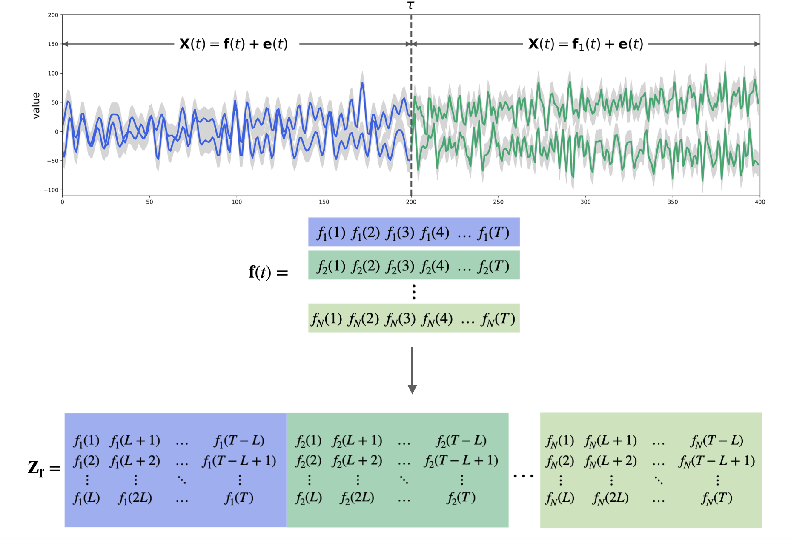
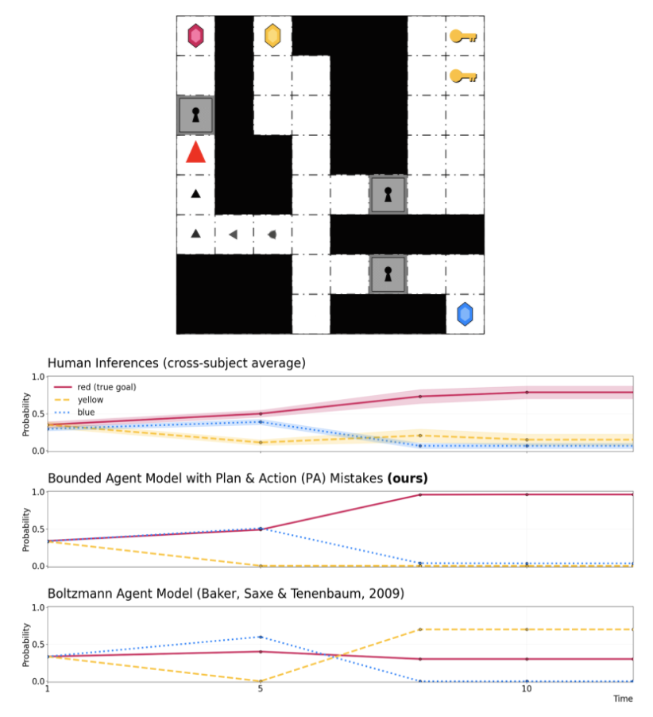

Research

Optimal Cruise Control
In this project we design and analyze a non-linear optimal control scheme with the objective of smoothing unstable traffic flows in predominantly human-driven traffic. We model the non-linear dynamics of the system using a car-following model and we design our objective function to achieve traffic smoothing and reduction in fuel consumption. Given this problem setup, we use Pontryagin’s maximum principle (PMP) optimality conditions and the adjoint method to devise a numerical algorithm to solve this system and obtain the optimal control input. We demonstrate the effectiveness of our approach on real-world trajectories data collected from the I-24 in Tennessee.

Change Point Detection
Detection of abrupt changes in time series data is an important subject of study in applied statistics that covers many real-life applications, from medical diagnosis to fraud detection. In this project, we develop, theoretically analyze, and empirically evaluate an online algorithm for change point detection (CPD) in multivariate time series based on multivariate singular spectrum analysis.

Baysian Theory of Mind: Modelling Human Mistakes
Humans have an innate ability to reason about the goals of others in their environment by observing their behavior. Remarkably, we, as humans, can do so even in the presence of mistakes or failures to achieve such goals. In this project, we explore the question of how to allow machines to have similar capabilities of reasoning about the mistakes of other agents in their environments. To do so, we model agents and their environments as generative processes that account for sub-optimality at three levels of decision-making: goal confusion with semantically similar goals, errors in planning, and mistakes in taking actions.